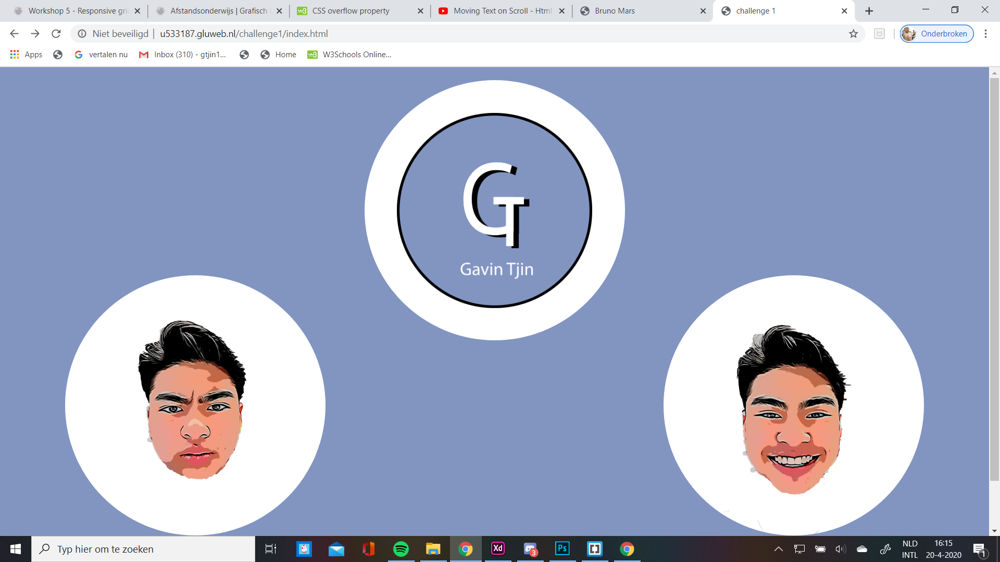

Bruno Mars
Dit is mijn eerste website die ik heb gemaakt. De opdracht was om een website maken voor een artiest/acteur, dus koos ik voor bruno mars omdat ik wel een nummers van hem luister. De beoordelings fromulier heb ik helaas niet meer. Klik hier om de website te bekijken.

challenge 2
Dit is mijn 2e website die ik heb gemaakt en die was voor challenge 1. Hier was de opdracht om 2 kanten van jezelf in een website te laten zien, dus had de kanten leuke dingen en minder leuke dingen gekozen. Klik hier om de website te bekijken